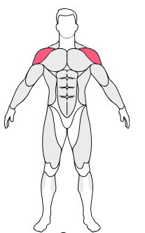

Barbell Overhead Press
Foscued Muscules
- Shoulders
- Chest
- Triceps
- ForeArms
Instruction
- Press until your elbows are extended and push your head forward slightly.
- Pull your chin back and press the weight toward the ceiling by extending at the elbow joint and flexing at
the shoulder joint.
- Press until your elbows are extended and push your head forward slightly.
- Return to the start position with control. Pulling your chin back to allow the bar to pass your face
safely.

Dumbbell Seated Overhead Press Beginner
Foscued Muscules
- Shoulders
- Chest
- Bisceps
- ForeArms
Instruction
- Sit on a bench with back support. Raise the dumbbells to shoulder height with your palms forward.
- Raise the dumbbells upwards and pause at the contracted position.
- Draw shoulder blades back and down, keeping elbows tucked close to your body
- Lower the weights back to starting position.
Barbell Upright Row
Foscued Muscules
- Shoulders
- Chest
- Bisceps
- ForeArms
Instruction
- Take a double overhand roughly shoulder width grip.
- Pull your elbows straight up the ceiling. Aim to get the bar to chin level or slightly higher.
Cable Low Single Arm Lateral Raise
Foscued Muscules
- Shoulders
- Chest
- Bisceps
- ForeArms
Instruction
- Use a handle attachment with the cable set all the way to the bottom of the machine
- You should vertically abduct at the shoulder raising your arm straight out to the side.
- Raise until your arm is parallel with the ground and then back to the starting position.